Descubra sua aderência à cultura e aos desafios de Suporte Técnico na Zapizi.
Obrigado, Candidato. Seus resultados foram registrados com sucesso.
Nosso time de People já recebeu os dados abaixo e entrará em contato.
Salvando seus resultados...